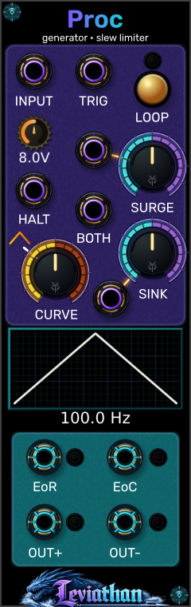
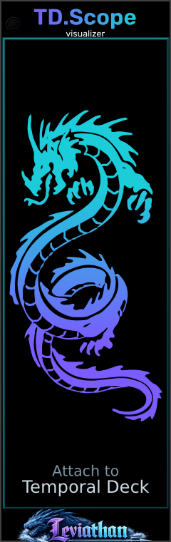
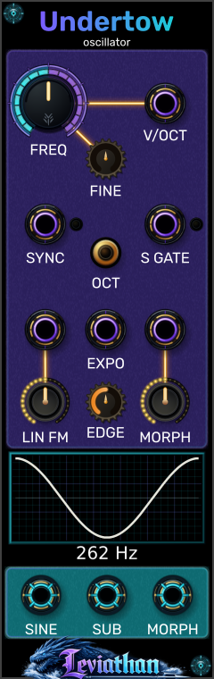
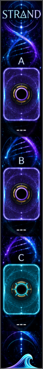

Instruments for VCV Rack 2
Into the deep.
Comprehensive user manuals, voltage calibration tables, signal flow architectures, and patch recipes for the open-source Leviathan module suite and Leviathan Pro instruments.
Flagship & Premium Instruments
Leviathan Pro
Dedicated instruments engineered for high-precision acoustic analysis, multi-core filtering, and advanced performance.
Open Source · GPL-3.0 · VCV Rack 2
Free Modules
The open-source collection from PlasmaChroma/Leviathan-Rack2. Spanning dual function generators, turntables, oscillators, physical models, and mastering tools.

Dual slope generator & analog logic
Integral Flux
Dual variable-slope slew limiter, sub-Hz to audio-rate function generator, curve warper, attenuverters, and Maths-style OR / SUM / INV bus logic.

Slope generator & freeze controller
Proc
Compact 8 HP function generator and slew limiter with HALT integration pause, variable output amplitude, and simultaneous complementary +/- outputs.

Stereo scratch deck & sampler
Temporal Deck
Explore live audio history and loaded samples with platter scratching, slip return, reverse, freeze, and LongPlay playback.

Temporal Deck companion
TD.Scope
Connect the waveform expander, read the playback head, and drag the display to scrub.

Folded-wave oscillator
Undertow
Sine, morph, and gated sub-octave voices, with pitch control, linear FM, and hard sync.

Pseudo-cycle interleaver
Strand
Weave captured A and B cycles into a new waveform. Includes an interactive explanation of the interleaving and output sequence rate.
| Module | Category | Description & Signal Path | Documentation |
|---|---|---|---|
|
Integral Flux 20 HP
|
Function Generator, Slew, Logic | Dual slope generator with variable log-lin-exp curvature, independent rise/fall CV, both CV, attenuverters, and OR / SUM / INV analog logic bus. Audio-rate and slow modulation operation. | User Manual → |
|
Proc 8 HP
|
Function Generator, Slew, Envelope | Single-channel slope generator, slew limiter, loop cycle, envelope follower, and freeze controller. Features HALT gate pause, dedicated amplitude scaling, and simultaneous +/- outputs. | User Manual → |
|
Temporal Deck 20 HP
|
Sampler, Delay, Turntable | Virtual turntable with modern hybrid control: circular stereo live buffering, platter scratch physics (33⅓ RPM baseline), slip return, reverse, freeze, and long-play sample playback. | User Manual → |
|
TD.Scope 8 HP
|
Visual, Expander | Waveform expander for Temporal Deck with mono and stereo views, playback-position display, and vertical dragging to scrub the deck. | User Manual → |
|
Undertow 8 HP
|
Oscillator | Compact analog-style VCO with sine, a folded morph waveform with edge hardness control, linear FM, hard sync, and a gated -1 octave sub output. | User Manual → |
|
Deep Cache 4 HP
|
Utility | Preloads module-browser previews for faster browsing. | User Manual → |
|
Iris 12 HP
|
Oscillator, Visual | Polyphonic image-to-wavetable oscillator featuring smooth table scanning across visual source fields. | Manual planned |
|
Nautiloid 20 HP
|
Visual, Expander | Fractal exploration display companion for image-source workflows. Hidden from the module browser in the current source manifest. | Manual planned |
|
Puffy 12 HP
|
Distortion, Dynamics, Visual | Stereo wave-shaper saturator with animated peak control. | Manual planned |
|
Sil 20 HP
|
Dynamics, EQ, Mastering | Automatic mastering module with dynamics processing and EQ. | Manual planned |
|
Theme 12 HP
|
Visual, Utility | Global semantic color palette and glass texture manager for all theme-aware Leviathan modules. | Manual planned |
|
Vessel 16 HP
|
Physical Modeling, Synth Voice | Tunable struck and friction-excited singing bowl physical model with stereo observation. | Manual planned |
|
V.Tune 8 HP
|
Expander | Performance and voicing controls for Vessel. Hidden from the module browser in the current source manifest. | Manual planned |
|
Strand 3 HP
|
Distortion, Effect | Zero-crossing pseudo-cycle interleaver creating harmonic folding and unique textural distortion. | User Manual → |